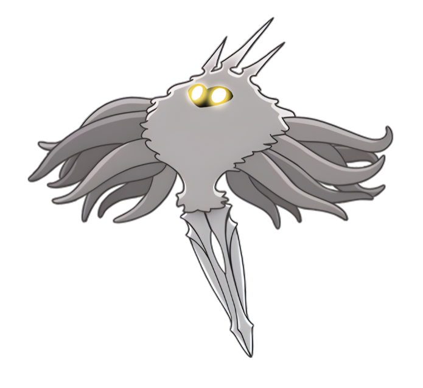
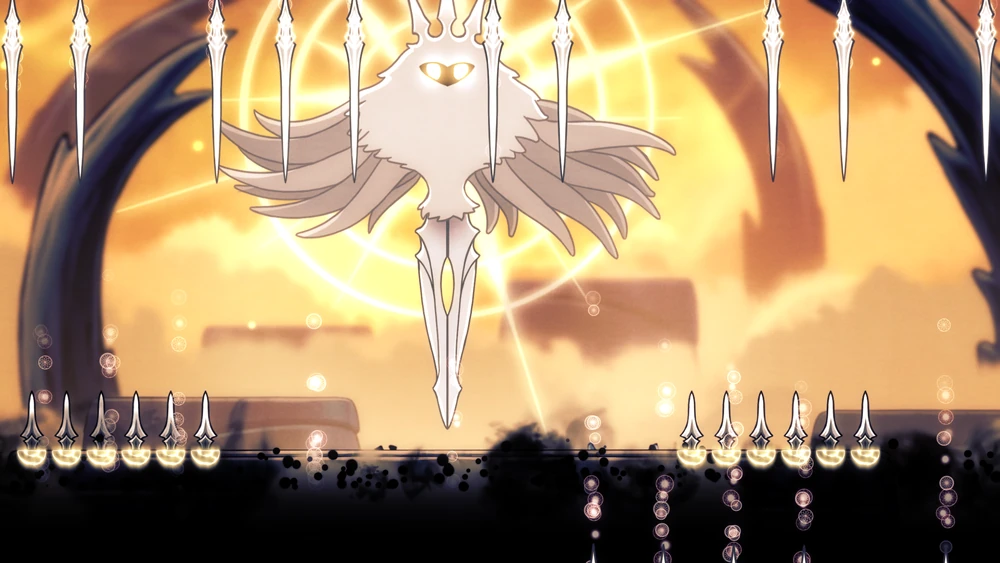

RADIÂNCIA
A Luz, esquecida

"A praga, a infecção, a loucura que assombra os cadáveres de Hallownest... a luz que grita dos olhos deste Reino morto. Qual é a fonte? Suponho que simples mortais como eu nunca entenderão."

História

A Radiância é um ser superior de luz semelhante à Essência e, como tal, oposto ao Vazio, seu
antigo inimigo. A Tribo das Mariposas nasceu de sua luz e em troca a reverenciou.
Depois que o Rei Pálido chegou em Hallownest e expandiu as mentes de seus novos súditos, a Tribo
das Mariposas deu as costas à Radiância e o veneraram ao invés disso. Deste modo, a Radiância foi
quase inteiramente esquecida, apesar de resquícios de sua memória permanecerem, como uma estátua na
Coroa de Hallownest. Sua memória começou a se espalhar pelo Reino, na época em sua fase de ouro.
Rapidamente, toda a Hallownest começou a sonhar nela aparecendo a eles como uma luz ardente.
Esses sonhos podiam confundir as mentes de insetos e eventualmente escravizar suas vontades a
ela. No entanto, o Rei e seus súditos resistiram à sua memória, o que então começou a
manifestar-se como a Infecção. Com a Infecção, a Radiância ofereceu união aos insetos ao
custo de uma mente incapaz de pensar.
O Rei Pálido tentou parar a Infecção selando a Radiância dentro de um Receptáculo. Essas criaturas,
fundidas com o Vazio para não terem mente ou vontade, deviam ser capazes de resistir à influência da
Radiância. O Cavaleiro Vazio foi escolhido, criado, e cresceu para esse fim. A Radiância foi
selada dentro dele, e o Receptáculo foi acorrentado dentro do Templo do Ovo Negro. No entanto, o
Receptáculo obteve impuridades de mente. Por causa disso, a Radiância ainda conseguiu invadir os
sonhos dos insetos. Ela finalmente destruiu os habitantes do Reino, do qual seu Rei desapareceu, mas
deixou o resto da terra intacto.
Tempo passou, Hallownest se tornou um mito enquanto a Radiância permaneceu selada. Sua influência
finalmente começou a escapar do Cavaleiro Vazio. Ela reacendeu a Infecção, ameaçando novamente a
terra de Hallownest e causando o retorno do Cavaleiro.
Eventos
De sua prisão, a Radiância, coração da Infecção, atormenta os sonhos dos insetos. Ela infecta
Myla, fazendo com que ela ataque o Cavaleiro, e usa Germes de Luz e moscas Infectadas para
reanimar o Receptáculo Quebrado e os Cavaleiros Sentinela. Após matar pelo menos um Sonhador, ou
obter as Asas do Monarca, a Infecção piora na Encruzilhada Esquecida, transformando-a na
Encruzilhada Infectada, e tornando seus insetos mais violentos e perigosos.
Seu destino está ligado ao fim da jornada do Cavaleiro. Ao derrotar o Cavaleiro Vazio, o
Cavaleiro é capaz de selar a Radiância dentro de si, tomando o lugar de seu irmão dentro do Ovo
Negro.
Se o Cavaleiro usar o Ferrão dos Sonhos no seu irmão com a ajuda de Hornet, ele tem a
possibilidade de desafiar a própria Radiância. No entanto, com o Vazio unificado sob a vontade
do Cavaleiro, a batalha toma uma virada trágica para ela. O Vazio lentamente se infiltra no
seu sonho, buscando enredar e consumir a Radiância. No fim da luta, ele finalmente a alcança e a
imobiliza. A Sombra do Cavaleiro Vazio toma vantagem para expor o núcleo da Radiância, ao qual a
Sombra do próprio Cavaleiro dá os últimos golpes. A Essência da Radiância irrompe enquanto o
Vazio a consome e desparece do Templo do Ovo Negro, pondo um fim à Infecção.
Indiferente dos eventos recentes de Hallownest, a Buscadora de Deuses procura sintonizar a
Radiância ao Lar dos Deuses, onde seu povo pode reverenciar o ser esquecido como seu deus dos
deuses. O Cavaleiro pode invocá-la derrotando o Receptáculo Puro. Com a sintonia da
Buscadora de Deuses, ela se torna a Radiância Absoluta, seu estado perfeito. Desconhecido
porém pela Buscadora, o Vazio também foi atraído para o Lar dos Deuses.
Se o Cavaleiro passa pelo Panteão de Hallownest, ele pode desafiar a Radiância Absoluta no Lar
dos Deuses em uma luta similar ao seu sonho. No entanto quando a Radiância é cercada pelo Vazio,
a Sombra do Cavaleiro se funde com ele. Desta vez sintonizada pelas Buscadoras de Deuses, ele
toma uma forma toda-poderosa e chicoteia repetidamente ao núcleo da Radiância, com sua Essência
irrompendo para fora. Ela finalmente se estilhaça, pondo um fim à sua praga em Hallownest.
Imagens
